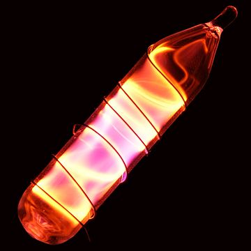

Neon (Ne, łac. neon) – pierwiastek chemiczny o liczbie atomowej 10. To gaz szlachetny, najmniej aktywny ze wszystkich pierwiastków. Najbardziej znane zastosowanie to świecące neony, czyli wysokonapięciowe rury jarzeniowe, najczęściej wykorzystywane w reklamie. Neon w śladowych ilościach występuje w powietrzu atmosferycznym. Otrzymuje się go ze skroplonego powietrza poprzez destylację frakcyjną. Nie jest znane żadne znaczenie biologiczne neonu.
Pierwiastek został odkryty przez brytyjskich chemików sir Williama Ramsaya i Morrisa W. Traversa w 1898 roku. Nazwa pierwiastka pochodzi od greckiego słowa neos, co oznacza „nowy”.

Neon świecący w polu elektrycznym